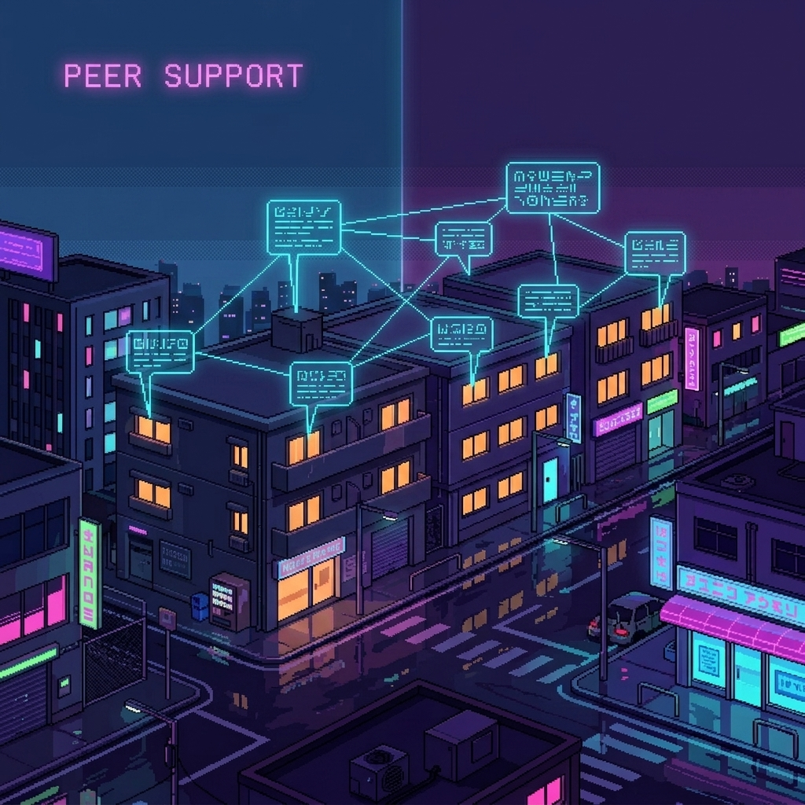

Empathy and Redemption: Online Support for Mental Health Before and After COVID-19

Abstract
This study examines the impact of the COVID-19 pandemic on individuals' mental health and their online interactions, particularly within Reddit's mental health communities. By analyzing data from 15 subreddits categorized into mental health and control groups from 2018 to 2022, we observed that forums dedicated to mental health exhibited higher levels of user engagement and received more supportive responses than those in other categories. However, as the pandemic evolved, a significant decrease in online support was noted, especially within these mental health groups. This decline hints at a risk of emotional burnout among users, which poses a particularly acute challenge for individuals grappling with mental health issues. Intimate relationships have also an impact on online expression of mental health. The research underscores the pandemic's effect on online support and interaction dynamics, signaling the necessity for a deeper understanding and the development of strategies to maintain support within online communities during times of crisis.